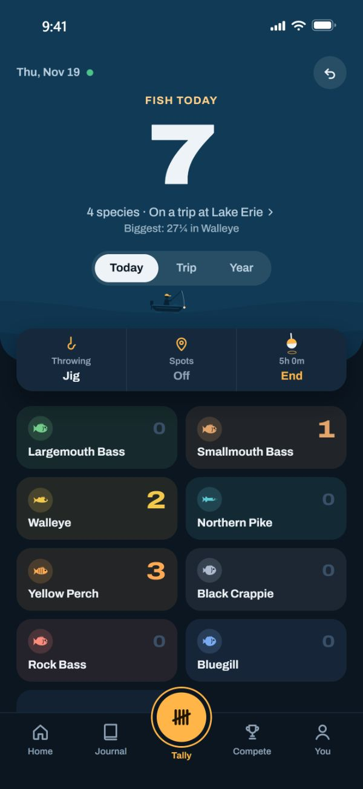
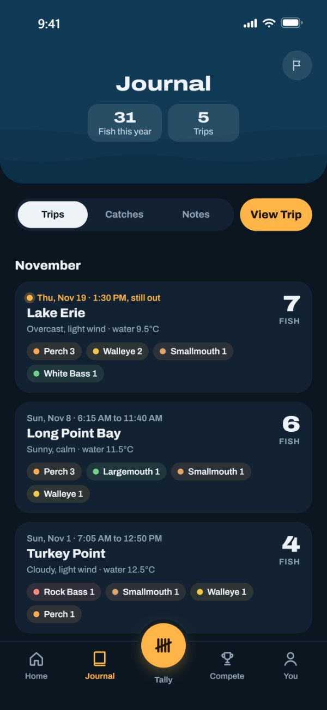
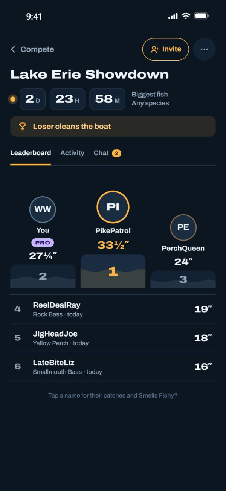

A fishing app made in Canada: tally your catches, keep a fishing journal, run comps with friends and check Ontario's fishing rules.

Free on iPhone, in Canada.
What it does
- Tally in one tapTap a fish and it's logged. Counts for today, your trip and the year.
- A fishing journalTrips, catches with photos and notes, and a calendar of every fish.
- Comps with your buddiesInvite friends with a code, set an end date and a reward, and follow the live leaderboard and chat.
- What's OpenOntario's fishing rules for your zone today: open or closed, limits and sizes, and the lakes and rivers with their own rules.
- Forecast and What's BitingWind, rain, pressure and good times to try, plus what's being caught near you, by area, never by spot.
- XP, streaks and badgesLevel up as you fish, keep a daily streak going and earn badges.
Your exact spots stay private. No ads, and we never sell your data.
A look inside

Tally: fish today, by species 
A catch with its photo 
Journal: your trips 
Forecast for Lake Erie at Port Dover 
What's Open for Zone 19 
A comp leaderboard